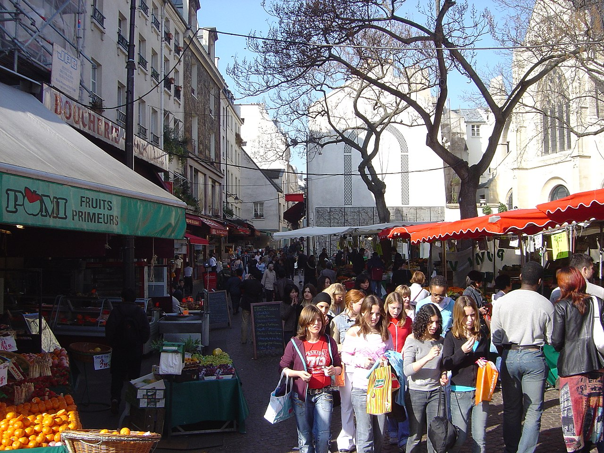

Le Quartier latin se situe sur la rive gauche de la Seine à Paris dans le 5e arrondissement et dans le nord et l'est du 6e arrondissement, avec pour cœur historique la Sorbonne.
C’est un quartier encore très fréquenté par les étudiants et professeurs, du fait de la
présence de nombreux établissements d'enseignement supérieur et de recherche.
Plusieurs établissements siègent dans le bâtiment historique de la Sorbonne (Chancellerie des
universités, Université Panthéon-Sorbonne, Université Paris-Sorbonne), les centres universitaires du
Panthéon et d'Assas, le campus de Jussieu (Université Pierre et Marie Curie), l’université Paris III
Sorbonne Nouvelle, le Collège de France, la bibliothèque Sainte-Geneviève et la Maison de la recherche.